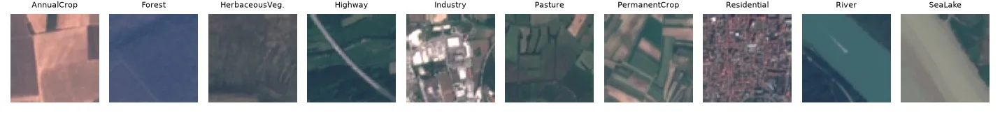
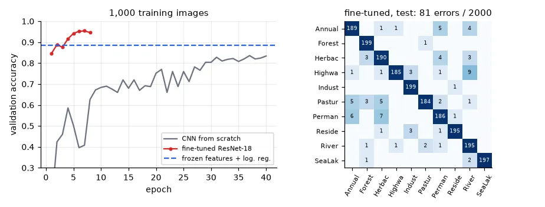

A decade of architectures#
Every image classifier since 2012 is a variation on lesson 13's recipe — convolutions, non-linearities, downsampling, a classifier at the end — with ideas added to go deeper, cheaper or more accurate. torchvision ships most of them with ImageNet weights, and their metadata gives a compact history:
zoo = [("AlexNet (2012)", models.AlexNet_Weights.IMAGENET1K_V1), ("VGG-16 (2014)", models.VGG16_Weights.IMAGENET1K_V1),
("ResNet-18 (2015)", models.ResNet18_Weights.IMAGENET1K_V1), ("ResNet-50 (2015)", models.ResNet50_Weights.IMAGENET1K_V2),
("MobileNet-V3-S (2019)", models.MobileNet_V3_Small_Weights.IMAGENET1K_V1),
("EfficientNet-B0 (2019)", models.EfficientNet_B0_Weights.IMAGENET1K_V1),
("ConvNeXt-T (2022)", models.ConvNeXt_Tiny_Weights.IMAGENET1K_V1), ("ViT-B/16 (2020)", models.ViT_B_16_Weights.IMAGENET1K_V1)]
for name, w in zoo:
m = w.meta
print(f"{name:23s} {m['num_params'] / 1e6:6.1f} M params {m['_ops']:6.2f} GFLOPs "
f"ImageNet top-1 {m['_metrics']['ImageNet-1K']['acc@1']:.1f}%")
AlexNet (2012) 61.1 M params 0.71 GFLOPs ImageNet top-1 56.5%
VGG-16 (2014) 138.4 M params 15.47 GFLOPs ImageNet top-1 71.6%
ResNet-18 (2015) 11.7 M params 1.81 GFLOPs ImageNet top-1 69.8%
ResNet-50 (2015) 25.6 M params 4.09 GFLOPs ImageNet top-1 80.9%
MobileNet-V3-S (2019) 2.5 M params 0.06 GFLOPs ImageNet top-1 67.7%
EfficientNet-B0 (2019) 5.3 M params 0.39 GFLOPs ImageNet top-1 77.7%
ConvNeXt-T (2022) 28.6 M params 4.46 GFLOPs ImageNet top-1 82.5%
ViT-B/16 (2020) 86.6 M params 17.56 GFLOPs ImageNet top-1 81.1%
- AlexNet (2012) — the network that won ImageNet by a landslide with GPUs, ReLUs and dropout, and started the deep learning era.
- VGG (2014) — "just stack 3×3 convolutions": simple and deep, but 138 M parameters, most of them in its dense layers.
- ResNet (2015) — residual connections (below) made 50, 101, even 1,000 layers trainable. ResNet-18 matches VGG-16 with 12× fewer parameters and 8× less compute; it is still the default backbone in robotics.
- MobileNet, EfficientNet — designed for phones and embedded boards (depthwise-separable convolutions, scaled width/depth/resolution). MobileNet-V3-Small runs in 60 MFLOPs: this is the family that fits on a drone.
- Vision Transformers (2020) — cut the image into 16×16 patches and process them with the attention layers of language models. Better than CNNs with huge pretraining data; ConvNeXt (2022) showed a modernised CNN can match them.
The residual connection#
Why couldn't networks simply be made deeper before 2015? Measure it: the gradient that reaches the first layer of a plain stack of convolutions, at initialisation, versus the same depth built from residual blocks \(\mathbf{y} = \text{relu}(\mathbf{x} + F(\mathbf{x}))\):
class ResidualBlock(nn.Module):
"""y = relu(x + F(x)): the block only has to learn a correction F to the identity."""
def __init__(self, ch):
super().__init__()
self.f = nn.Sequential(nn.Conv2d(ch, ch, 3, padding=1), nn.ReLU(), nn.Conv2d(ch, ch, 3, padding=1))
def forward(self, x):
return torch.relu(x + self.f(x))
def first_layer_grad(net):
torch.manual_seed(0)
x = torch.randn(16, 16, 32, 32) # (batch, channels, H, W) random input
net(x).pow(2).mean().backward() # any scalar loss will do
return net[0].weight.grad.norm().item() if isinstance(net[0], nn.Conv2d) else net[0].f[0].weight.grad.norm().item()
for depth in (4, 16, 48):
torch.manual_seed(0)
plain = nn.Sequential(*[m for _ in range(depth) for m in (nn.Conv2d(16, 16, 3, padding=1), nn.ReLU())])
torch.manual_seed(0)
resnet = nn.Sequential(*[ResidualBlock(16) for _ in range(depth // 2)])
print(f"{depth:2d} conv layers: gradient norm at the first layer, plain {first_layer_grad(plain):.2e}, "
f"residual {first_layer_grad(resnet):.2e}")
4 conv layers: gradient norm at the first layer, plain 4.81e-04, residual 9.20e-02
16 conv layers: gradient norm at the first layer, plain 8.99e-10, residual 1.21e-01
48 conv layers: gradient norm at the first layer, plain 0.00e+00, residual 2.79e-01
In the plain network the signal shrinks a little at every layer, forward and backward (lesson 11's product of derivatives), and at 48 layers the gradient underflows to exactly zero: the first layers cannot learn at all. In the residual network the identity path \(\mathbf{x}\) carries the signal and its gradient straight through every block, and each block only has to learn a correction \(F\) to the identity — so an extra block can at worst learn \(F = 0\) and do no harm. Batch normalisation and careful initialisation help plain networks too, but the skip connection is what scales: it is in every modern architecture, transformers included.
Transfer learning#
Training ResNet-18 from scratch takes 1.3 million labelled ImageNet images and days of GPU time. But its early layers learn edges and textures, and its later layers learn generic parts and shapes, useful far beyond ImageNet's 1,000 classes. Transfer learning reuses them: take the pretrained network, replace its last layer, and train on your small dataset.
The test: EuroSAT, 64×64 Sentinel-2 satellite tiles of 10 land-use classes — the kind of aerial imagery a drone or a mapping pipeline deals with, and quite unlike ImageNet's photos of dogs and cars. We pretend labels are expensive and keep only 100 images per class for training:
ds = datasets.EuroSAT(str(U.CACHE), download=True) # 27,000 Sentinel-2 RGB tiles, 64x64, 10 classes
labels = np.array(ds.targets)
rng = np.random.default_rng(0)
idx = {s: [] for s in ("train", "val", "test")}
for c in range(10):
i = rng.permutation(np.flatnonzero(labels == c))
idx["train"] += i[:100].tolist() # only 100 labelled images per class
idx["val"] += i[100:150].tolist()
idx["test"] += i[150:350].tolist()
def load(ids):
"""(N, 3, 64, 64) float32 tensor in [0, 1] and (N,) int64 labels."""
X = torch.stack([TF.to_tensor(ds[i][0]) for i in ids])
return X, torch.from_numpy(labels[ids])
(Xtr, ytr), (Xva, yva), (Xte, yte) = (load(idx[s]) for s in ("train", "val", "test"))
print("classes:", ds.classes)
print("train", tuple(Xtr.shape), "val", tuple(Xva.shape), "test", tuple(Xte.shape), Xtr.dtype)
classes: ['AnnualCrop', 'Forest', 'HerbaceousVegetation', 'Highway', 'Industrial', 'Pasture', 'PermanentCrop', 'Residential', 'River', 'SeaLake']
train (1000, 3, 64, 64) val (500, 3, 64, 64) test (2000, 3, 64, 64) torch.float32

Satellite tiles have no "up", so flips and 90° rotations are free augmentations (8 versions of every tile):
def augment(x):
"""Satellite tiles have no 'up': random flips and 90-degree rotations are free extra data."""
if torch.rand(1) < 0.5:
x = x.flip(-1)
return torch.rot90(x, int(torch.randint(0, 4, (1,))), dims=(-2, -1))
class Tiles(torch.utils.data.Dataset):
def __init__(self, X, y, transform=None):
self.X, self.y, self.t = X, y, transform
def __len__(self):
return len(self.X)
def __getitem__(self, i):
x = self.X[i]
return (self.t(x) if self.t else x), self.y[i]
Baseline: a CNN from scratch#
def scratch_cnn():
def block(cin, cout):
return [nn.Conv2d(cin, cout, 3, padding=1, bias=False), nn.BatchNorm2d(cout), nn.ReLU(), nn.MaxPool2d(2)]
return nn.Sequential(*block(3, 32), *block(32, 64), *block(64, 128), *block(128, 128), # 64 -> 4 px
nn.AdaptiveAvgPool2d(1), nn.Flatten(), nn.Dropout(0.3), nn.Linear(128, 10))
torch.manual_seed(0)
t0 = time.time()
scratch = scratch_cnn()
h_scratch = U.train_classifier(scratch, DataLoader(Tiles(Xtr, ytr, augment), batch_size=32, shuffle=True),
Xva, yva, epochs=40, lr=2e-3, weight_decay=1e-4, device=device, verbose=False)
print("CNN from scratch: val acc %.3f, test acc %.3f (%.0f s)"
% (h_scratch[-1, 3], U.evaluate(scratch, Xte, yte, device)[1], time.time() - t0))
CNN from scratch: val acc 0.834, test acc 0.859 (109 s)
Option 1: frozen features + a linear classifier#
Remove ResNet-18's ImageNet head (fc = Identity()): the network now maps every tile to 512 numbers. Compute them once, with the network frozen, and train a logistic regression (lesson 04) on top — a linear probe. Two details are essential: the input must be preprocessed exactly as during pretraining (ImageNet mean and standard deviation), and tiny 64×64 images are upsampled, because ImageNet objects were seen at ~224 pixels.
weights = models.ResNet18_Weights.IMAGENET1K_V1
MEAN, STD = torch.tensor([0.485, 0.456, 0.406])[:, None, None], torch.tensor([0.229, 0.224, 0.225])[:, None, None]
def prep(x):
"""What the pretrained network expects: ImageNet statistics, and a bigger image than 64x64."""
x = nn.functional.interpolate(x, size=112, mode="bilinear", align_corners=False)
return (x - MEAN) / STD
backbone = models.resnet18(weights=weights)
backbone.fc = nn.Identity() # drop the 1000-class ImageNet head: outputs 512 features
backbone.eval().to(device)
@torch.no_grad()
def features(X):
return torch.cat([backbone(prep(X[i:i + 200]).to(device)).cpu() for i in range(0, len(X), 200)]).numpy()
t0 = time.time()
Ftr, Fva, Fte = features(Xtr), features(Xva), features(Xte) # (1000, 512), (500, 512), (2000, 512)
probe = LogisticRegression(C=0.5, max_iter=3000).fit(Ftr, ytr.numpy())
print("frozen ResNet-18 + logistic regression: val acc %.3f, test acc %.3f (%.0f s)"
% (probe.score(Fva, yva.numpy()), probe.score(Fte, yte.numpy()), time.time() - t0))
frozen ResNet-18 + logistic regression: val acc 0.884, test acc 0.880 (16 s)
Better than the CNN trained for two minutes, in 16 seconds, with no deep learning training at all. And the advantage grows as labels get scarcer:
for n in (5, 10, 25, 50, 100):
sel = np.concatenate([np.flatnonzero(ytr.numpy() == c)[:n] for c in range(10)])
acc = LogisticRegression(C=0.5, max_iter=3000).fit(Ftr[sel], ytr.numpy()[sel]).score(Fte, yte.numpy())
print(f"{n:3d} labelled images per class -> test acc {acc:.3f}")
5 labelled images per class -> test acc 0.638
10 labelled images per class -> test acc 0.740
25 labelled images per class -> test acc 0.824
50 labelled images per class -> test acc 0.849
100 labelled images per class -> test acc 0.880
With 25 images per class, pretrained features come within 3.5 points of the from-scratch CNN trained on four times more.
Option 2: fine-tuning#
Train the whole network — pretrained layers included — with a new 10-class head and a small learning rate (3e-4: we want to adjust the features, not destroy them):
torch.manual_seed(0)
model = models.resnet18(weights=weights)
model.fc = nn.Linear(512, 10) # new head for our 10 classes, randomly initialised
class WithPrep(nn.Module):
"""Put the resizing and ImageNet normalisation inside the model, so it takes raw tiles."""
def __init__(self, m):
super().__init__()
self.m = m
def forward(self, x): # x: (B, 3, 64, 64) in [0, 1]
return self.m(prep(x))
net = WithPrep(model)
t0 = time.time()
h_ft = U.train_classifier(net, DataLoader(Tiles(Xtr, ytr, augment), batch_size=32, shuffle=True), Xva, yva,
epochs=8, lr=3e-4, weight_decay=1e-4, device=device, verbose=False)
_, ft_acc = U.evaluate(net, Xte, yte, device)
print("fine-tuned ResNet-18: val acc %.3f, test acc %.3f (%.0f s)" % (h_ft[-1, 3], ft_acc, time.time() - t0))
fine-tuned ResNet-18: val acc 0.946, test acc 0.960 (121 s)

| Approach | Labelled images | Training time (CPU) | Test accuracy |
|---|---|---|---|
| CNN from scratch | 1,000 | 2 min | 85.9% |
| Frozen ResNet-18 + logistic regression | 1,000 | 16 s | 88.0% |
| Fine-tuned ResNet-18 | 1,000 | 2 min | 96.0% |
A recipe for your own data#
- Start from a pretrained backbone, preprocessed exactly as it expects. Pick the size for your hardware: ResNet-18/50 on a laptop or a Jetson, MobileNet/EfficientNet on a microcontroller-class device.
- Try a linear probe first: minutes, and a strong baseline. If it is good enough, stop.
- Otherwise fine-tune with a learning rate 10× smaller than from scratch, augmentation that respects your labels, and early stopping. With very little data, freeze the early layers and train only the last block and the head.
- Train from scratch only when your data is huge, or nothing like natural images (spectrograms, depth maps, medical volumes — and even then, pretrained models often still help).
This is also how detectors are trained: the YOLO model of the next lesson starts from COCO weights and adapts to a new dataset with a few dozen images.
Exercises#
- Fine-tune only
layer4andfc(setrequires_grad = Falseon the rest). How do time and accuracy compare with full fine-tuning? - Replace ResNet-18 by
efficientnet_b0ormobilenet_v3_small(look for the name of their classifier layer). Plot test accuracy against GFLOPs. - Run the linear probe with the backbone's random initialisation instead of ImageNet weights. What accuracy do random features give, and what does that tell you about where the 88% comes from?